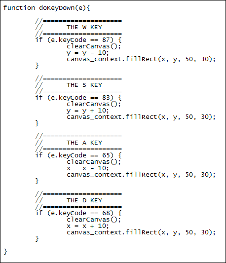

HTML5 Canvas and Keydown Events
Ongoing HTML5 Canvas Tutorial: 1 2 3 4 5 6 7 8 9 10 11 12 13 14 15
Instead of moving the black rectangle with a timer as we did in the last lesson, a shape can be moved by pressing keys on the keyboard. What we'll do is to move it left when the A key is pressed and move it right when the D key is pressed. We'll move the black rectangle up when the W key is pressed and down when the S key is pressed. To see what your web page will look like at the end of this lesson, click the link below (opens in a new window or tab):
Move a canvas rectangle using keydown events
Detecting a Key Press
Things like buttons, text boxes, images and hyperlinks have events such as onClick attached to them. Unfortunately, the canvas tag doesn't. So there's no handy onKeyPress event you can use. You can, however, write your own events and attach them to the canvas tag. This is done with the Javascript method addEventListener. Here's the syntax for the method:
addEventListener( event_type, event_handler, capture )
The event_type argument is the type of event you want: click, mouseover, keypress, and lots more besides. The event_handler is the name of the function you want to call for the event. The capture argument is a Boolean value. It can usually be set to false. This means you don't want to capture any other events.
If you want the entire browser window to accept a key press event, the code would be this:
window.addEventListener( "keypress", doKeyDown, false )
So the first arguments tells addEventListener that we want to activate the keypress event. The second argument is a function we've called doKeyDown. This is the function that will be called whenever a key is pressed on the keyboard.
We want the canvas tag rather than the entire browser window to accept key presses, though. So we can change the code to this:
var canvas = document.getElementById("canvas_1");
canvas.addEventListener( "keydown", doKeyDown, true);
We first get a reference to the canvas with getElementById. This reference is placed in a variable we've called canvas. It is then used with the addEventListener method.
Now that we have an event set up for when the key pressed, let's add the doKeyDown function:
function doKeyDown(e) {
alert( e.keyCode )
}
In between the round brackets of your event function you can type a variable name. We've called ours e. This variable contains the keyboard event itself. To get at the key that was pressed you can use the inbuilt property keyCode. This returns a number relating to the key that pressed. The A key on the keyboard, whether you have CAPLOCK on or not, has a key code number of 65. The other key codes we're interested in are these:
W = 87
S = 83
D = 68
With these key codes, then, we can write a series of IF Statements for each key:
if ( e.keyCode == 87 ) {
}
if ( e.keyCode == 83 ) {
}
if ( e.keyCode == 65 ) {
}
if ( e.keyCode == 68 ) {
}
The code for each IF Statement can move the rectangle. The entire code for our doKeyDown function is this:

When the W key is pressed we have a call to a clearCanvas function. You can add this one:
function clearCanvas() {
canvas.width = canvas.width;
}
We then take 10 away from the y variable:
y = y - 10;
The first time the setInterval timer activates the y variable will then by 90. The x variable will still be on 100. These figures are used in the next line:
canvas_context.fillRect( x, y, 50, 30);
So the filled rectangle will be at X, Y position 100, 90 when the W key is pressed. Press it again and they will be 100 80.
The same holds for the other three keys: change the X or Y value and use them to get a new position for the rectangle. All this happened when keys are pressed on the keyboard. Try it yourself. You should find that you can move the rectangle around the canvas by pressed the W, S, A, or D keys.
You can get the whole code for this lesson here (opens in a new window or tab): Keydown code for the canvas tag.
In the next lesson, you'll learn how to handle mouse events and the HTML5 canvas.